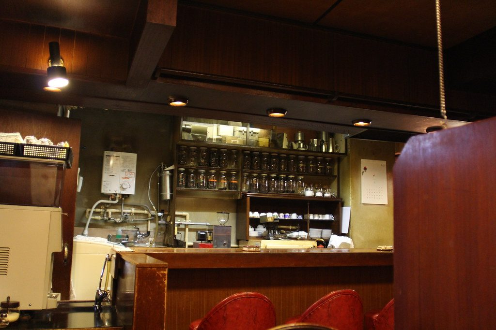
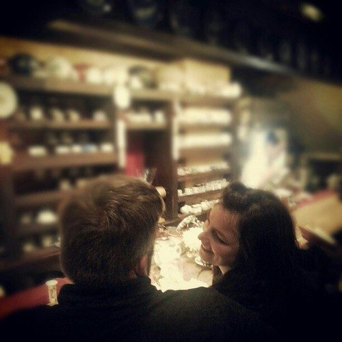
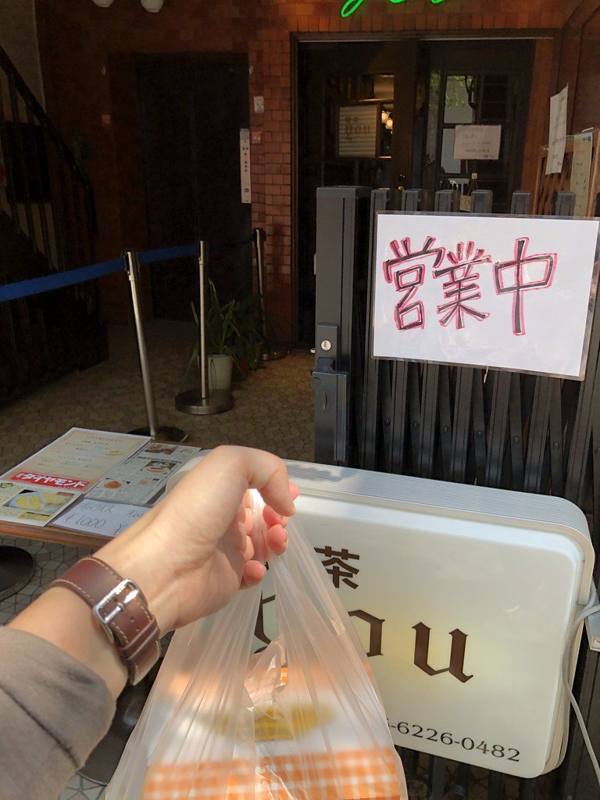
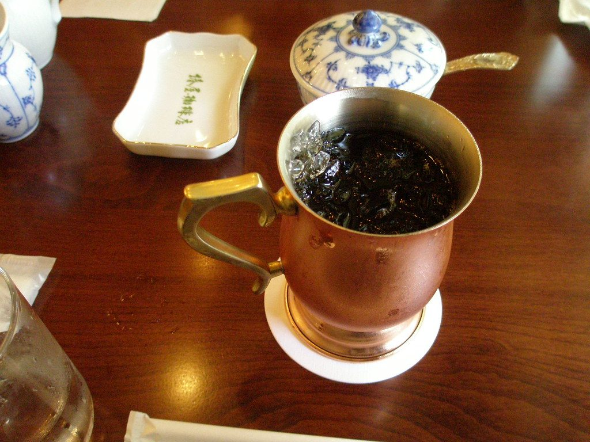
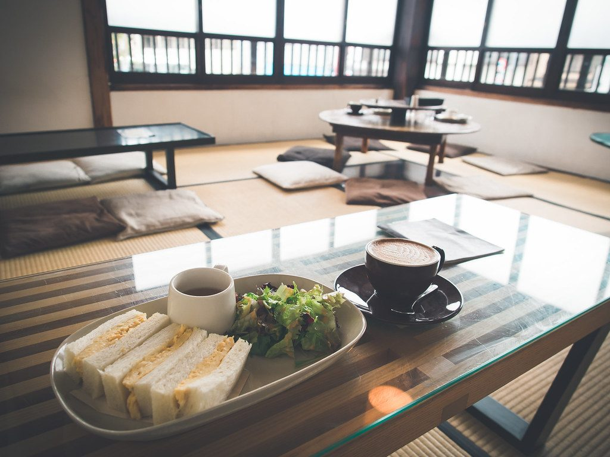

KISSATEN
★ ＴＯＰ ５ ★
Step out of the neon into the hush of Japan's Showa-era coffee houses, where pour-over is an art.

NO.1
02

Chatei Hatou 茶亭 羽當
A peaceful, windowless haven minutes from the Crossing, serving meticulous pour-over since 1989; sit at the counter.
03

Kissa You 喫茶YOU
Founded 1970, beside the Kabukiza with its Showa interior intact; celebrated for an almost drinkable, ultra-soft omurice.
04

Tsubakiya 椿屋珈琲
A dim, antique Ginza kissaten styled after the Taishō era (1912–26), serving siphon coffee with old-Tokyo elegance.
05

Kayaba Coffee カヤバ珈琲
A corner kissaten in old-town Yanaka in a 1916 wooden building, a coffee house since 1938; famed for its egg sandwich.
Photos: free-license / CC (Wikimedia · Unsplash · Pexels) — placeholder stock; final = shop-supplied.